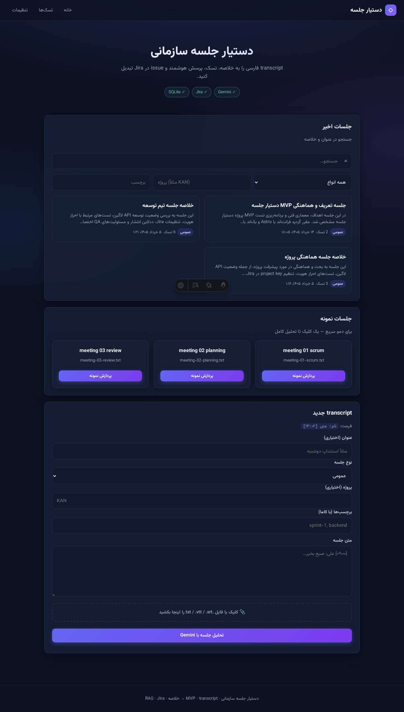
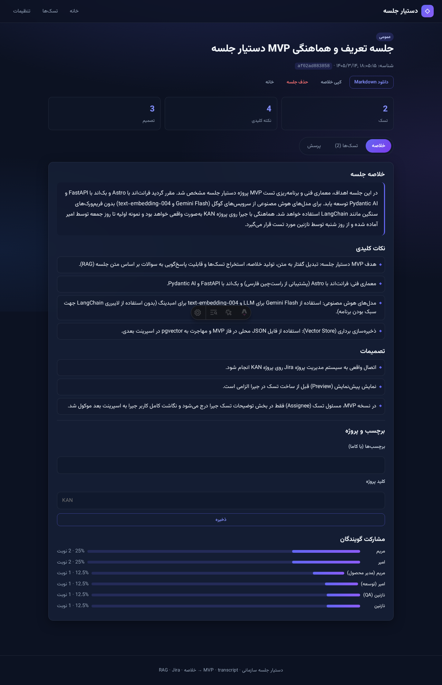

پیام یک خطی: ما یک هسته توسعهپذیر دستیار هوشمند سازمانی داریم که روی دادههای هر سازمان شخصیسازی میشود.
| نام فنی | LLM-based Organizational AI Core |
|---|---|
| نام بازاری | پلتفرم ساخت دستیار هوشمند اختصاصی برای سازمانها |
| اولین محصول (MVP) | دستیار جلسه — transcript → خلاصه · تسک · RAG · Jira |
جلسات سازمانی زمان زیادی میگیرند اما خروجی قابل پیگیری ندارند: تصمیمات فراموش میشوند، تسکها پراکنده ثبت میشوند، و جستجو در گذشته جلسات سخت است.
GOOGLE_API_KEY) → transcript قابل ویرایش
flowchart TB
subgraph client ["کلاینت — RTL فارسی"]
Astro["Astro UI"]
end
subgraph server ["سرور"]
FastAPI["FastAPI"]
PAI["Pydantic AI Agents"]
Gemini["Gemini Flash"]
Embed["Google Embeddings"]
SQLite["SQLite
meetings.db"]
Chroma["ChromaDB
data/chroma/"]
Jira["Jira Cloud"]
end
Astro --> FastAPI
FastAPI --> PAI
PAI --> Gemini
FastAPI --> SQLite
FastAPI --> Embed --> Chroma
PAI --> Chroma
FastAPI --> Jira
| Agent | وظیفه |
|---|---|
analysis_agent | تحلیل transcript → خروجی ساختاریافته Pydantic |
rag_agent | پاسخ سوال با context از Chroma (بدون dump خام transcript) |
فریمورک Pydantic AI انتخاب شده چون typed، سبک، و مستقیماً با Gemini یکپارچه است — بدون LangChain سنگین.
flowchart LR
S1["Sprint 1 ✅
MVP دمو"]
S2["Sprint 2
آرشیو · RAG چندجلسه"]
S3["Sprint 3
Jira · assignee map"]
S4["Sprint 4
Auth · تقویم · اعلان"]
S5["Sprint 5
Postgres · deploy"]
S6["Sprint 6+
چندعامله · داشبورد"]
S1 --> S2 --> S3 --> S4 --> S5 --> S6
رابط فارسی RTL با تم تیره — جزئیات فنی در پیاده-سازی.html.


| لایه | انتخاب |
|---|---|
| Frontend | Astro + CSS سبک + RTL |
| Backend | FastAPI + Python 3.11+ |
| Agentic | Pydantic AI |
| LLM | google:gemini-3.5-flash |
| Meetings DB | SQLite (data/meetings.db) |
| Vector DB | ChromaDB (embedded) |
| Embedding | gemini-embedding-001 |
| Frontend | Astro SSR — بارگذاری جلسه از سرور |
| مخزن | Rvin-zh/meeting-assistant |
| Issue tracking | Jira Cloud — پروژه KAN |